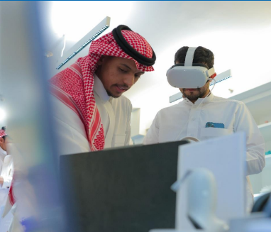
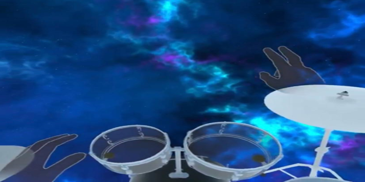
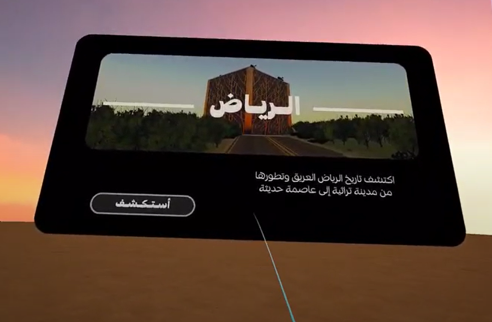
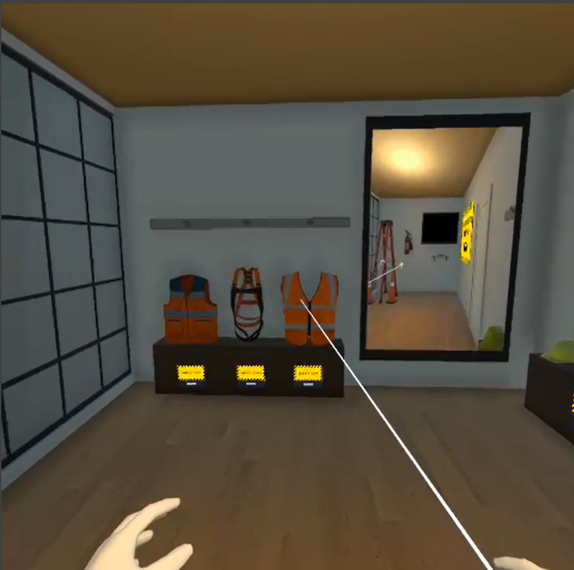
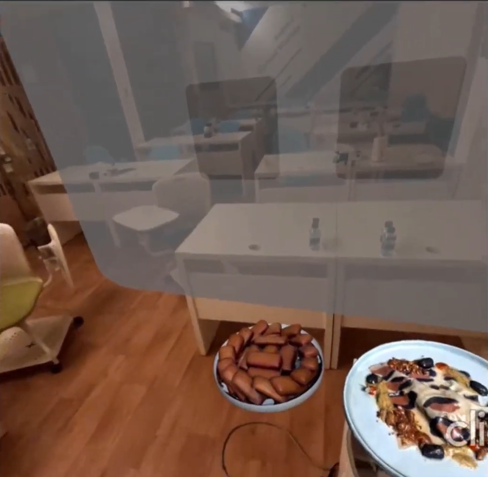

About me
An XR Technical coach with a focus on VR technology and game
development
A 9 months bootcamp at Metaverse Academy sponsored by Meta,
to develop XR Experiences and game development.
At DevFest Conference I was
the Technical Speaker led discussions on the technical aspects of the Metaverse.

Projects

In this project, I utilized Unity engine's capabilities alongside advanced hand tracking technology to enable users to interact with virtual drums using their bare hands. By recognizing hand poses and movements, users can strike drum pads and cymbals. Also Use their hands poses to change the view, play the song, and change the musical instrument. experiencing the full range of drumming techniques and expressions.
Saudi National Day
(VR Experience)

This VR experience guides users through Riyadh’s transformation from its traditional heritage to a modern metropolis, immersing them in the contrast between Old Riyadh cultural roots and the city contemporary development.
VR Window Cleaner Experience

Using cutting-edge virtual reality technology, we've created a thrilling and realistic experience that allows users to tackle the dizzying heights of skyscrapers from the safety of their own home.

Using mixed reality technology we’ve developed a menu experience that shows the foods in a realistic way